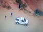

PRINTED
Monday, November 01, 2010
Shafter, California
We would have liked to have stayed in bed longer but finally got up and got going. After the weekend with Roy and Linda we just really appreciated the love and companionship that we have. I wish there was something we could do to help them. Elder Shaw and I tapped more on the home. We quit shortly after 2PM so that we could go to Merrill Dibbles new home and do some minor repairs for him. Elder and Sister Shaw was late getting to our place but we still went. We had to stop at Home Depot for some parts and then went to Dibbles to do the repairs. It was almost 7PM when we finished and left to go eat. We went to Sizzler’s and all of us had the salad bar. We just had fun eating and visiting. It was 9:30PM when Mae and I got home. That will put the Shaw’s almost 10PM when they get home. I filled out this entry and we soon went to bed.
Tuesday, November 02, 2010
I slept in the chair until 3:15 this morning and then I went to bed and put my c-pap on. We didn’t get up until 6AM so we had to hurry but I got to work at eight. We finished the third coat and then started texturing the ceilings. Shortly after 2PM we got notified that the Full Time Elders needed a ride from Bakersfield to Wasco. I cleaned up my truck so that they would have room to ride. Elder Ray and his new companion Elder Isley were waiting at the Bakersfield South Stake center when we got there. Elder Bills new companion is Elder Garth. Elder Isley is a brand new missionary with this being his first assignment.
Elder Garth is fairly new to the mission also. We had the four of them for dinner this evening. Mae was quite stressed this evening, before they came, as the Elders were late for dinner. It went well and Mae had a wonderful meal for them. I helped clean up and wash the dinner dishes. Jeff called and visited with us for quite a while. I sure get homesick for the children. I goofed (again) when one of the Elders asked how Sister Browning and I met, I gave my version and that upset Mae.
Wednesday, November 03, 2010
This morning Elder Shaw and I went to the Paramount processing plant in Lost Hills to get two pallets of Pistachios for South Valley Farms. We only brought Elder Shaw’s truck as that is what I thought Lee wanted us to do. I guess that Elder Shaw understood that we were going with both pickups. When we got to the Paramount plant we had a number to call but that just went to an answering machine. We finally found an office and they told us to go to gate 7 and door 15. We found a guard gate but they couldn’t find where we should go. He sent us looking but that ended up a wild goose chase. After a while we were told that we should have gone to gate 6 and there we found door 15. They loaded us with a fork lift and when they put the two pallet loads on the truck I was afraid that we should have brought both trucks. I worried all the way back and Elder Shaw’s driving didn’t help me any for he drove to fast and didn’t start stopping in time. I was glad when we got back ok. I told Lee that I must have misunderstood him and he asked me “Why take two trucks when one could do?” Elder Shaw and I spent the rest of the day texturing the ceiling and walls of the house. We got quite a lot done. On the way home I stopped at the water shed at the Kimberlina homes and got the paint we had stored there. Also on the way home I stopped and took pictures of the cotton harvesters picking a cotton field. I showered before we ate dinner. We watched two episodes of Wanted Dead or Alive and then a John Wayne movie. I filled out this entry while Mae fixed my lunch for tomorrow. I upset Mae again this evening because I asked her if she had decided about sending Pistachios home to the kids for Christmas. That didn’t go over very well. Good night!
Thursday, November 04, 2010
I am having great difficulties reading Isaiah and with the problems I am having with Mae I was greatly depressed today. Elder Shaw and I loaded the excess sheetrock and took it out to storage at the Sherwood farm. We then went to Home Depot and got materials for the houses. We start texturing the house again but had to quit for the monthly birthday party. When we returned we finished the texturing of the house before quitting for the day. Mae had written me a note and left it on the seat of my truck. She is so good to me and I fear that I am not good enough for her. I stopped at Floyd’s and got a billing corrected before going home. Mae had dinner ready when I got there. I was so tired that I took a nap before taking my shower. After showering I lay on the floor using the Chee machine. Mae read me some reports on foods. We played two games of Rummy and Mae won both of them. I filled out this entry and we went to bed.
Friday, November 05, 2010
Lee called me just before I got to work and asked if I would go into Lowe’s and purchase a toilet flush handle and install it in the women’s rest room at the office. Elder Shaw and I figured the material that we will need to build frames for the windows in the house and duplex. I came home and changed into some more suitable clothes to go to town in. I picked up the window materials at home depot. I then went to Best Buy and Wall-Mart and looked at speaker sets for our computer. I bought the one from Wall-Mart. Next I went to Lowe’s and found the flush handle Lee wanted me to buy. I also bought a toilet seat and vanity sink handle set for our place. I unloaded the window material at the Kimberlina shop and got some water for our house for our place before returning to the plant. I repaired the toilet for the women’s rest room and then did some more measuring for the windows so the Monday morning Elder Shaw and I could build the frames. I came home and tried to hook up the speakers to the computer but couldn’t get very much volume from then. I hooked it to the DVD player and to the TV and got very good sound out of it. Mae came home from volunteering at the grade school and setting up quilting frames at the church about the time I was testing the speakers. We watched the show “Hang Them High” staring Quant Eastwood. We had seen that show once before but didn’t remember it very well. It was a good movie. We went out to eat in Shafter at the Chinese restraint. We should have reversed the dinner and the show and I think we would have both slept better.
Saturday, November 06, 2010
I didn’t get up until almost 8AM but Mae had been up for some time. Mae had breakfast ready and was putting up her hair. After eating Mae went to the church for a Relief Society Super Saturday activity day. I worked around the house getting the dishes washed, washing and drying the linen on our bed, replacing the bathroom sink faucet and making the bed. I found that the toilet seat didn’t need to be replaced but just locked into place. Mae got home about 2:30PM from the church. Sherry had just called Mae to tell her that Carroll was in the hospital. Bruce called a short time later to tell us of Carroll. It doesn’t sound very good. She had collapsed while at the chiropractors this morning and Bob took her into the McKay hospital. They operated on her to stop a blood clout from reaching her heart or brain. I called all of our children to let them know as it sounds quite serious. Time went fast but we got several things taken care of. The Shaw’s came over this evening and we played games of Mormon bridge. Irven called to let us know that the operation ok and Carroll was out of immediate danger. We watched a movie on DVD that Elder and Sister Shaw brought. It was a cute show about missionary experiences. After they left about 9PM, I corrected the clocks as tomorrow we come off day light savings time. It was still after 10PM when we got to bed.
Sunday, November 07, 2010 (Rained this evening)
Shafter, California
With this morning being Fast Sunday we had plenty of time to get ready for Church. We were told that it rain quite hard in Wasco last night, we didn’t see any evidence that it had rained here in Shafter. When we got to the church house we set up for our nursery class and then went into the chapel for choir practice. We enjoyed the Sacrament meeting and the spirit that was there. As we left the chapel both Mae and I had a child holding our hand to go to the nursery class. We love the children but by the time the two hours are over we are beat. We had 12 children today and they were full of it. When we got home we lay down and took a nap. Anyway I did as soon after we lay down David called to see how Carroll is doing. Mae got up to answer the phone and she talked to David and all the children until I woke up. We got us some dinner and after doing up the dishes I put on a couple of church DVD. Between the two movies I called Bob to see how Carroll is doing. He had just got home from the hospital. He said the operation was successful and Carroll may be able to come home tomorrow. Mae worked on the computer and found out that the internet is not working again. I was afraid of that after the Technician had me restore the computer yesterday when I was trying to get the sound to work on the computer. After we watched the second movie on the Prophet Joseph Smith, Mae and I lay on the couch and rubbed each other’s feet. I then entered my journal entry before going to bed.
Monday, November 08, 2010
We got up at 6AM but that didn’t leave me time enough to do any stretch exercises before going to work. I stayed at the carpentry shop and cut the parts for the window jambs while I had Elder Shaw go for parts. This evening after we had eaten dinner we went to Elder and Sister Shaw’s where we watched a recording of John Bytheway give a lecture on the “Heroes of the Book of Mormon.” It was very enjoyable. We stopped at the grocery store on the way home and bought some chicken. Mae has spent several hours again trying to get the computer restored. It is getting late so we had better go to bed.
Tuesday, November 09, 2010
I didn’t sleep the best last night in fact I slept part of the night in the recliner. I again worked on at the carpentry shop on building the window casings. Elder Shaw helped Lee with some cabinets and then did the monthly spraying of the homes. Mae went to the nursing home as a volunteer this morning. After she finished with that she and Sister Shaw went into Bakersfield shopping. Mae returned the sound equipment to Wal-Mart that I bought last Friday. In as much as the sound card is out on our computer we didn’t feel there was any need to keep the sound equipment. When Mae returned home she went right to work preparing dinner for the Elders. When I got home I showered and then helped Mae with the finishing touches before the elders arrived. At the dinner table we got talking with the Elders about our trip to Jerusalem. Before leaving, Elder Bills and Elder Graft sang a hymn “I Stand All Amazed”. We do enjoy having the Elders in our home. I helped Mae with the dishes and then lay on the Chee machine for a few minutes. Mae and I watched a show from the series “Big Valley”. Mae received a letter from her friend Carolyn Cue informing her of Gary Cue’s passing. Mae has known Carolyn every since they served together in the Primary Presidency in the Clearfield 1st Ward.
Wednesday, November 10, 2010
I woke early so went back to sleep in the recliner. Mae didn’t feel good so after breakfast I had her go back to bed. I worked at the carpenter shop assembling the last of the window jambs and cutting the bottom casing for all the windows. I went to the house and Elder Shaw was spraying the primer on. I don’t think he has ever been shown how to spray paint. Oh well he tries! We ate lunch and then I took over the spraying. We finished up with the undercoat and cleaned up. It was about 2PM when we called it quits for the day. When I got home Mae says she is feeling some better but she has the croup and doesn’t sound better. I worked on the water heater and clean out some of the sediment from the tank. I roasted some almonds so that I can make some almond butter. I also ground some almonds for mile. Mae cooked some rice and we had gravy, chicken and vegetables for dinner. I helped her clean up and wash the dishes. I took a shower and shaved. This evening we watched the show “Tora! Tora! Tora!”, showing the bombing of Pearl Harbor. What a sickening feeling to realize how many blunders were made in that historical event and to realize that we know deal so freely with that country and they are still attacking us very slyly.
Thursday, November 11, 2010
Mae is feeling a little better but I let her sleep in. She had my lunch prepared and cooked cereal in the fridge that all I needed to do was to heat it up. When I got up I used the inverter table for a few minutes and then did my stretch exercises. Mae got up just as I was finishing breakfast. She is feeling some better. Elder Shaw and I painted the house and had it done by 12:45PM. We then stopped for lunch. After lunch we got the window casings and other trim materials brought over for tomorrow. Mae was up and feeling much better this afternoon. After dinner this evening I took a nap in the recliner. I then showered and shaved. Mae talked to David, who called to check on how Mae was feeling. Mae had called and talked to Shauna yesterday, to check on how Conner was feeling, as he had croup the other day. Shauna had recognized that Mae wasn’t feeling well and had told David. That is why he had called to check on her. Mae also called and talked to Scott and his children. I called Bob to see how Carroll was doing. Bob said that she was in a rehab center and doing quite well. Mae and I watched another one of the “Big Valley” series. I then filled out this entry and we got ready and went to bed.
Friday, November 12, 2010
I would like to sleep in but we got up and I went to work and Mae went to the grade school to help there. Mae did get most of the things ready for us to go to the Los Angeles Temple this afternoon with the Shaw’s. Elder Shaw and I started trimming the house. We took a break about 10:30 and I ate a little then. Mae called me about 11AM and told me that she didn’t feel well and had come home early. We decided that we had better stay home. I informed the Shaw’s that we wouldn’t go and I called the Temple housing and canceled our reservation. I worked until 4PM so I could finish installing one door. I had installed all the window jambs and seals and the one bedroom door. The windows sure worked out well having them prebuilt. I had some problems installing the doors as I had framed the door height 81 inches instead of 82 inches. That mean I will have to trim all the doors. I went to build the jambs for the closet doors and found that Pro Built had sent me exterior jamb material instead of interior material. I called and they were going to find out what had happened and call me back but I didn’t get a call. I stopped on the way home and bought Mexican fried rice and beans for us for dinner. While we ate dinner we watched a DVD “Somewhere in Time”. I then moved the TV into our bedroom and we watched the movie “Viva Las Vegas” and that was about as good (or as bad) as any of Elvis’s movies.
Saturday, November 13, 2010
We slept in this morning and prepared breakfast of waffles and eggs about 11AM. This afternoon we went into the urgent care center and had Mae checked. The Dr. said that she did not have whooping cough but a virus that is going around. She probably got it from the children at school. We went out to eat at the Home Town Restaurant. We came home and Mae changed and we went back to the Stake Center in Bakersfield and attended the Saturday Evening session of our Stake Conference. It has been a wonderful day, being with my sweetheart and mainly relaxing. The evening conference was very good. Elder Golden of the First Quorum of Seventy is our presiding Authority over the Stake conference. We really enjoyed his remarks this evening. He opened his remarks to answering questions from the congregation. I found his answer to a question about cola drinks very interesting. He said that we should use wisdom but the question is not asked in order to receive a Temple Recommend. After getting home I filled out this entry and then got ready for bed. I talked to Sandi on the phone today, she is doing well. She said that Chelci found out that their baby is a little girl.
Sunday, November 14, 2010
I slept until 6:45 this morning but Mae got up a little earlier. We attended our Stake Conference which was great. Elder Golden came into the chapel at 9:45AM and I believe shook hands with almost everyone in the chapel except the choir and he waved to them. We were setting in the last row of the chapel so we did get to shake hands with him. As I did I told him that our grandson had just received his call to South Africa. He said to tell him he is in for a great experience. President and Sister Brimhall were also there this morning and they gave great talks. President Hawkins (the Stake President) gave the opening address and then had he had a Spanish Sister who had just been baptized bear her testimony with President Slaughter translate for her, then followed with a couple that had just been sealed in the Temple tell their conversion and activation experience. President and Sister Brimhall spoke, followed by the Stake Patriarch. President Hawkins then called for another Brother to bear his testimony and what an experience he had when he investigated and joined the Church. Elder Christoffel Golden Jr. spoke the remaining time and kept us spell bound. A few of the thoughts he taught us that I made note of, and I hope that I got them down right are;
“We are some of the wealthiest people on earth and we need to realize it. You may not think that you are wealthy because we only have one car or only have a smale house with two bedrooms, but the majority of the people in the world don’t have a car and are lucky if they have a one room house to live in.”
“It is important that we realize who we are before we worry about what we want to be.”
“Parents don’t feel like you have failed when a son or daughter goes astray. You weren’t given a hand book.”
“Many, many more will be saved than the number that will be lost.”
“The parable of the 10 virgins was written for the Faithful Latter Day Saints.”
“The Prophet Joseph Smith was called of God; however he was still a man.”
Those are just a few, very few, thoughts that he gave, and I hope that I got them close to being right. I wish that I could have had a recording of his talk to be able to restudy them several times. After the meeting ended we went to the front and met with President and Sister Brimhall for a minute before we returned home. Mae put dinner in the oven and we went outside and took pictures of us in various areas around the house. The self timer on the camera is very handy for such pictures. Dinner was very good. Jeff and I got on the internet and played a couple of games of “Hearts’” on the computer. The last time we tried that it wouldn’t work. Mae talked to David and Shellie this evening. It has been a good day.
Monday, November 15, 2010
I woke shortly before the alarm went off but we still lay in bed for a little while. Mae is feeling much better and spent the day doing laundry, house cleaning, washing all the windows and preparing for F.H.E. with the Shaw’s tonight. Elder Shaw and I continued to work on finishing’s. The door casing that we are using is not dittoed out in the back. We needed a router table but do not have one. We made one by drilling a 1 ¼ inch hole in some sheeting and mounting Elder Shaw’s router to it and using his guide. It worked very well and made trimming the doors much easier. I have contacted Pro Built three times and have still not got a solution to the wrong jamb material they sent me. I believe that I will just return the wrong material and purchase what I need elsewhere. I was tired when I got home. Mae had dinner about ready when I got home. After eating I showered and shaved and then lay on the Chee machine. I even got a short nap before the Shaw’s came for F.H.E. Mae and I filled out our journal entries and soon went to bed.
Tuesday, November 16, 2010
Mae cooked hot cakes for breakfast this morning. They were very good! I did make some almond milk before leaving for work. I worked on the house while Elder Shaw went to Home Depot for materials. Pro-Built brought some door jambs for me this morning. I assembled two closet jambs and hung the bi-fold doors. When Elder Shaw returned he continued to prep trim for painting. I was tired when I got home this evening. Mae soon had dinner ready. After shaving and showering I located our Christmas card list from the back-up we have on the external hard drive. It took me a while to get it to transfer to our laptop. Mae, Sister Shaw and Melody Rains went to Bakersfield to help with Project Linus. After that they did some shopping and got home late this afternoon. Mae and I were going to watch a DVD from Netflix but the DVD was broken and would not read. We watch the first show of eight of The Call of the Wild. It was very good. I entered my journal entry and we soon went to bed.
Wednesday, November 17, 2010
I didn’t sleep the best last night and spent much of the night in the recliner. I did cuddle up with Mae for a few minutes before we had to get up in order to get to work on time. Mae cooked egg omelets, toast and hot chocolate for breakfast. I had told her to just put some cold cereal on but she wanted me to have a better breakfast than that. I had Elder and Sister Shaw go looking for lighting and other materials while I continued to install trim. I took the doors over to Lee’s shop and cut them off on the table saws there. On the way home I stopped at the post office to pick up a large letter that would not fit in our mail box without bending it, so the mail man returned it to the office and left us a note to pick it up. I shaved and showered before dinner and then took a nap in the recliner. Bob called to see if the fax came through ok, which it did. I asked him if he had the key to our camper as Scott and Jeff had came over to winterize it but couldn’t find the key. Bob was gone to visit Carroll so he was not home when they came over. He will call Scott and make arrangements for him to get the key. I started to work on the computer when Jim Fraiser called and I visited with him for 1 ½ hours. I did work on the Christmas letter that Mae had compiled, getting it to fit the back side of the picture Christmas card Mae had made up for us. I then worked on the printer setup for printing addresses on the envelope. I got both work out and then entered this entry. Good night!
Thursday, November 18, 2010
I worked on trimming the house while Elder and Sister Shaw went over to Lee’s shop and built shelving for the closets. After I finished the trim I worked on filling nail holes and caulking the trim. Mae was busy all day and went Visit Teaching this afternoon. The Elders called and said that they didn’t have a dinner appointment so Mae said that we would have them for dinner. They had an appointment so didn’t get to our place until 6:50PM. I know that I couldn’t eat that late so I had some stew and ate light when they came. I was able to roast some almonds and grind them and was just finishing making almond butter when they arrived. I was very tired so took a nap after they left. Mae said that she would leave the dishes to dry but had so many that she dried the first half so she could stack the rest in the drainer. We were late getting to bed.
Friday, November 19, 2010
Mae didn’t sleep very well but got up early as she had school to go to today. When I got to the plant I figured my bills and gave them to Lee. I also bought some pistachios for our children and other gifts. We were not able to get as many as we want and I am not sure just why not. Lee said that it may be because of the State of California is putting pressure on companies. Elder Shaw and I worked on the house getting the trim ready for paint. I left Elder Shaw to start painting primer on the trim. I went for some materials. We quit for lunch with a Thanksgiving dinner for all the office personal and companions including some children. After a very enjoyable dinner Elder Shaw and I got doors ready to spray paint, however we didn’t have time to spray them today. I took time to repair a 220 amp outlet in the shop area. Mae went to Bakersfield after the dinner and didn’t get home until 20 minutes after I got home. We were going to go to the Los Angeles Temple in the morning but it looks like we will have storm and very possible snow in the higher elevations and if that happens the Grape Vine highway will be closed down. Roy called and needs some help so we will go to Fresno and give him a hand and go to the Temple there. After dinner I helped Mae with some blankets she is making for grandchildren and great grandchildren. We then watched a DVD “Love Comes Softly”. Although we have seen it several times we still get very emotional over the beautiful story. It was very late before we got to bed.
Saturday, November 20, 2010
Shafter, California (Rained heavy during the night and fog this evening.)
We slept in this morning because we enjoyed loving last night. We had planned on going to the L.A. Temple but with the heavy rains last night and as cold as it was we were glad that we changed directions. We arrived at Roy and Linda’s at 11AM. That gave us just enough time to change and go to the Temple. Linda was sick so she didn’t go with us. We sure enjoyed the Temple session today. We saw quite a few trees with the fall colors and that was sure nice to see. The Almond trees and the Pistachio trees don’t turn colors when the leaves fall off, so it was nice to see the other trees turn colors. I assembled a TV table for Roy and Linda. We had one part missing and I had to do a little creative work to get around that one missing part. Roy prepared lunch for us. Linda got feeling some better before we left. Mae worked on her blankets both as we went and returned today. She did get three more blankets finished. David called just when we got home so we were able to hear how he did in his interview for Physician Assistant School. We also talked to Emily and Connor for a few minutes. I filled in this entry and we took our showers and soon went to bed.
Sunday, November 21, 2010
Shafter, California
We got up about 6AM to start the day. We had cold cereal for breakfast before we left for church. On the way to Church we called and sang Happy Birthday to Sandi. We enjoyed the Sacrament meeting and then we went into the nursery. At first we thought that it would be an easy day as several of our children we gone with family for the Thanksgiving week, however we were shortly surprised when we had several Spanish children come from visitors to our Ward. We did not have any helpers with us today. I soon went to elder and Sister Shaw and asked for help. They were very willing to come and help us out. During the nursery class Mae got a call on her phone from Carroll. Carroll told her that their Grandson Brody Young had been shot yesterday while in the line of duty as a Park Ranger. After meeting Mae went with me to visit Manuel Macias. We visit with Brother Macias for about a half hour before going on home. When we got home I ask Mae what we would have for dinner. Mae said that we would heat up some beans. I commented negatively that I really wished something besides left over’s. I hurt her feelings and had to apologize to her. She did come up with some ham steak and fried yam. It was a very nice meal. After dinner I helped her with the dishes and clean up. I then called our children to let them know of the shooting of Brody. They had all heard the News Reports but none of them had thought of the connection of the news reports of a Park Ranger being related to us. Irven and Sandy emailed us the reports below. I tried to call Bob but he didn’t answer the phone. This evening we watched a DVD entitled “Journey of Faith”. After watching it I took a short nap and then made this entry before we went to bed.
Reports emailed to us by Irven and Sandy dated November 19 & 20, 2010.
Utah State Parks ranger shot near Moab
November 19th, 2010 @ 10:45pm
By ksl.com
MOAB -- A Utah State Parks law enforcement officer is in critical condition after being shot multiple times while patrolling near the Poison Spider Mesa Trail area just south of Moab. The shooter is still on the loose.
Grand County Sheriff Jim Nyland says a man confronted the ranger in the parking lot just off of Highway 279, shortly before 9 p.m.
The man shot the ranger three times: once in the arm, leg and abdomen.
Nyland said, "We're not sure exactly, right now, exactly sure what did occur. Evidently, the officer had been shot multiple times; however, he was conscious and talking to the officers upon their arrival."
The victim was taken to Allen Memorial Hospital in Moab, but later flown to St. Mary's Hospital in Grand Junction, Colo.
Investigators haven't had a chance to talk to victim, so they have no description of the suspect.
The Grand County Sheriff's Office, the Utah Highway Patrol and several federal agencies are assisting with the search for the suspect.
Parts of Highway 279 and Kane Springs Road are blocked, and officers are patrolling State Route 191 looking for the suspect.
Stay tuned to ksl.com, KSL NewsRadio 102.7FM/1160AM and KSL TV for the latest updates.
Family of park ranger 'stunned' he was involved in shooting
November 20th, 2010 @ 9:47pm
By ksl.com
"If there's anyone who can make it through this, it's Brody. We're all thinking of him right now." -Deena Loyola
SALT LAKE CITY -- The family of a park ranger, shot and critically injured near Moab Friday, is struggling to understand why someone would want to hurt their loved one.
State Parks and Recreation Law Enforcement officer Brody Young, 34, and his wife, Wendy Young, live in Moab and have three children -- all under the age of six. He has worked for the Utah Division of Parks and Recreation for four-and-a-half years, according to spokeswoman Deena Loyola.
The Youngs have family and friends across the country -- many of whom are rushing to Colorado to be with the couple. David Nordquist, Young's brother-in-law, says it's rare to catch Young without a smile on his face.
Related:
Officials scale back
search for gunman overnight
Authorities have scaled back the search for a man accused of
shooting and critically wounding a park ranger in Moab.
"He's the nicest guy you'll ever meet," he told KSL Saturday.
Nordquist says the couple both worked as river guides for several years in Moab. Brody's job as a river ranger was a dream come true. "He loves his job passionately," said Nordquist.
David Nordquist, Brody Young's brother-in-law
Brody was shot at three times, in the arm, leg and stomach area, after he stopped a vehicle at the Poison Spider Mesa trail head Friday night. Though he was wearing a bullet-proof vest at the time, he was critically injured.
He was in surgery through the night and remains in critical, but stable condition. Family and friends say he's not out of the woods yet.
"He needs everybody's prayers," said Nordquist. "He needs everybody's help."
"We were told by doctors that they have an excellent team working on him, so we're just hopeful that he'll be alright," Brody's step-mother, Micheline Young said Saturday.
"He's a wonderful guy, so upbeat and social. He's friendly to everyone... He was always part of team." -Micheline Young
Loyola is confident he'll pull through. "If there's anyone who can make it through this, it's Brody," she said. "We're all thinking of him right now."
Micheline Young says she doesn't understand how this happened. "He's just not abrupt," she said. "He would never irritate someone to this point." When he graduated from the police academy several years ago, she said Brody was chosen to give a speech to his classmates.
"He's a wonderful guy, so upbeat and social. He's friendly to everyone," Micheline Young said, adding that with his job, he's been in scary situations before, "but never alone. He was always part of team."
Loyola says besides river patrol -- helping boaters and checking to see if people have permits -- Brody is also very active with the search and rescue team. While rangers are spread throughout the state, hundreds of miles apart, they're still a very close-knit group.
"I think we're a little bit in shock," Loyola said. "We've never had anything like this happen. He's one of our own."
Brody's father, wife and at least one sister were with him at the hospital Saturday. LDS ward members were helping to watch the children, Micheline Young said.
Meanwhile, the search for the man who shot Young has been scaled back for the night.
Monday, November 22, 2010
Shafter, California
Mae didn’t sleep very well last night so I let her sleep in. As normal she had prepared my lunch so I just had to put it into my lunch pall. I had cold cereal for breakfast. Bob called and gave me a little update on Brody. It is a wonder that he is alive. I had a few minutes so I worked on Christmas cards before leaving for work. We continued painting on trim and sprayed doors and shelving. I stopped on the way home at the storage shed by the Kimberlina homes for some material and while there I picked the last of the pomegranates and brought them home. Mae soon had dinner ready and after eating I got on the computer using Google Map to find the shortest way to Shellie’s. I then worked the rest of the evening helping Mae with her blankets for our grandchildren’s Christmas gifts. We got an update on Brody from Sandy this evening. David also called to let us know that he has been accepted into PA schooling.
I just spoke with Bruce. This is the update he gave me about Brody:
His condition has changed from critical to serious, which is good. He is in stable condition, but this morning his heart rate went up and they haven't gotten it down as of about 4:00 our time. From the time he was shot he has had 16-18 pts. of blood--a complete overhaul, said Bruce. He had 8 shots to his body, not 5 or 3, as was previously reported. They say it is amazing he got from being shot, to the hospital he now resides without dying.
His arm was shattered; a bullet hit the kidney, spleen, and intestine, fragments into the heart, and his leg. They have not done anything to repair his arm yet. He is in a medical coma, or something like that. Apparently he can hear but cannot speak He will probably be hospitalized for 3-4 more weeks. I asked Bruce if there was any word about the guy who shot him. He said there was none. They continue to look for him as if he is alive but because he is armed, they have to be careful. Bruce wonders if he may have killed himself and he is in the water close by, never able to locate him. He said this guy was on parole and broke parole, plus he was armed; and because he didn't want to go back to prison, it makes sense that Brody suspicioned him for some reason and the guy became scared about being caught, so he shot Brody.
I asked about writing emails to the hospital or some way to get messages to Brody. He said there was an email address being set up, and he would let me know that address, and I will forward it on to all of you.
We are putting his name in all temples in the country and I told him we would continually pray for him in our personal and family prayers.
Tuesday, November 23, 2010
We got up and after breakfast I went to work. Mae was busy all day getting things ready to leave for Shellie and Roy’s when I got home. Elder Shaw and I spray painted doors this morning. We were within 15 minutes from finishing when the spray gun plugged up and we couldn’t get it to clear. After working on it for some time I got another airless sprayer and finished the job. It was after 1PM when I was able to leave where I had planned on leaving at noon. Mae was completely ready including packing the car, when I got home. I showered and shaved and we left home at 2PM. We drove straight through to Shellie’s with three short stops and I made two wrong turns which cost us a little time but we still arrived at Shellie’s at 11PM California time.
Wednesday, November 24, 2010
Queen Creek, Arizona
I woke at 7:15AM and got up. I let Mae sleep in. Shellie had got the boys off to school so I got a John Wayne movie “The Son’s of Katy Elder” and watched it. Mae came up about noon. Shellie and Mae took a walk and I rode a bike with them. We did play some card games today. It has been a good day being here with Shellie and the boys. When Roy came home he worked on polishing his truck. Sandi, Chelci, Steve and Nathan arrived here just after 9PM. Some of us watched the movie, “Mc Clintock” before going to bed.
Thursday, November 25, 2010
Queen Creek, Arizona
We slept in this morning and after getting up I showered and shaved. Mae prepared some cold cereal for us for breakfast. I worked on some of my life history until we got ready to go out to Mimis Restaurant where we had reservations for Thanksgiving dinner. We had many of Roy’s family join us there for dinner. It was a wonderful dinner and we enjoyed ourselves. Many of the family returned to Roy and Shellie’s during the afternoon where we had deserts and played games. Before ending the evening some of us watched the movie “First Knight”. It was mid-night when we got to bed.
Friday, November 26, 2010
Queen Creek, Arizona
I woke at 8AM and went into the bathroom. I read my scriptures and then came in and woke Mae. I was glad that she was able to sleep ok last night for she had eaten quite a lot of deserts yesterday. It was very hard to be around all the wonderful foods and not eat most of them. Even I ate some that I shouldn’t but I was afraid that Mae had eaten too much. Garrett and I visited about the importance of the daily religious practices in order to resist the influences of the adversary. Shellie prepared omelets for breakfast and after eating Steve and Chelci went over to Steve’s brothers. I called Bob but he had gone to the store. Carroll came home this morning so I talked to her about her health and I asked about Brody and his family. She said that the Doctors operated on his arm and cleaned out the wounds yesterday. His fever dropped down for the first time, after that operation. Roy and Garrett got talking computers and computer design and it was about like lessoning to a foreign language. Mae and the girls were talking girl talk so I came downstairs and worked on the computer. Shellie, Sandi, Mae and I played Rook, the first game Sandi took the first three bids and won the game in those three hands. The next game we played for a long time and who ever took a bid lost almost ½ the bids so the game stretched out for a long time until we really just quite. We did get to meet Nora, Garrett’s girl friend. They seem to enjoy getting to know each other. I think everyone would be in favor of that relationship. This evening we watched a DVD titled “Australia”. It was very good and with Roy and Shellie’s editing program was a very enjoyable show. It was a long show however so it was after mid-night when we went to bed.
Saturday, November 27, 2010
Queen Creek, Arizona
I didn’t wake until 7:45 this morning. Mae slept longer than that. It is a beautiful day, as normal here. Jase, Nathan and I jumped for a minute on the trampoline before breakfast. We had a wonderful breakfast of eggs and hash browns (Mae and I substituted fried sweet potato over the hash browns) and all the trimmings. We had family activity today starting with going to the park and shooting rockets off, then we played croquet, followed by going to the Arizona Temple grounds to see the Christmas lights, we all returned home where Sandi, Chelci, Steve and Nathan went to bed as they will be leaving for home quite early tomorrow. All the rest of us watched the show “Avatar” until after mid-night. It was a very enjoyable day. The show was ok because of the program they have to remove bad language but I really don’t get excited about the science fiction shows.
Sunday, November 28, 2010
Queen Creek, Arizona
It was after 1AM when the show finished, them Mae and I took showers so we were 1:45AM getting to bed. We woke at 6 to get ready for Church. We would have made it but Quint couldn’t find his last pay information and they had Tithing Settlement following church. We enjoyed the meetings. When we got home Mae and I took a nap. When I got up I found me something for lunch and then Quint and I played a game of Chess on the computer. It took us two hours but I did beat the game. Quint is becoming a good chess player. Mae, Shellie, Quint, Kevis and I played Knock before dinner. This evening we enjoyed family Home Evening and reading the scriptures with Shellie and Roy’s family. Roy and Shellie showed us pictures of their trip to Boston and that area. It was after 11PM when we got to bed.
Monday, November 29, 2010
Shafter, California
We didn’t get up until 6:15 this morning. We soon packed the car and ate some breakfast. It was almost 8:30AM before we got away. We did very well until we got to San Bernardino and the GPS wanted to take us by way of Los Angeles. We certainly didn’t want to go that way as we would be there in the afternoon rush hour. We thought we found the way but then we ran into road construction and a detour. When I thought we were straight I went back to the GPS and it rerouted us back to L.A. so we lost more time. We also got gas and stopped at a grocery store for some groceries Mae needed for Wednesday. By the time we got back on the correct road I was about a nerves wreck. I took some aspirins and let Mae drive while I took a nap. It was 7PM when we got home. We unloaded the car and put things away. We watched a serious of “Big Valley” before going to bed. We also took a shower so it was 11PM before we got to bed.
Tuesday, November 30, 2010
Shafter, California (it froze last night)
I woke just before 6AM so I shut the alarm off so Mae could sleep a little longer. About 6:30 someone knocked at the door. It was one of the farm workers and they needed to jump the tractor and didn’t have a pickup to do that. When I went out to start my truck the windows were all frosted heavy so I had to drive with my window down to see. I got him going and came back. Mae had tried to get water in the sink and the water lines were frozen. We had the drinking water but nothing from the faucet. After eating breakfast I worked on the water until I finial got the water lines clear from ice and got it flowing. When I went to go to work my truck wouldn’t start. It has been quite a morning. Elder Shaw came over and we jumped my pickup with his. He then followed me to the shop and I left my pickup there for them to check out the problem. They replaced the battery in my pickup. Elder Shaw and I removed masking tape and then I started installing light fixtures. Elder Shaw worked on the shelving for the closets. It was after 5PM when I got home. I put cardboard over the pump and water lines to try to stop them from freezing tonight. After dinner I took a nap and then I printed the Christmas letters on the Christmas cards Mae had printed. I then used the computer to address the envelopes for the cards. It was after 10PM when we went to bed.